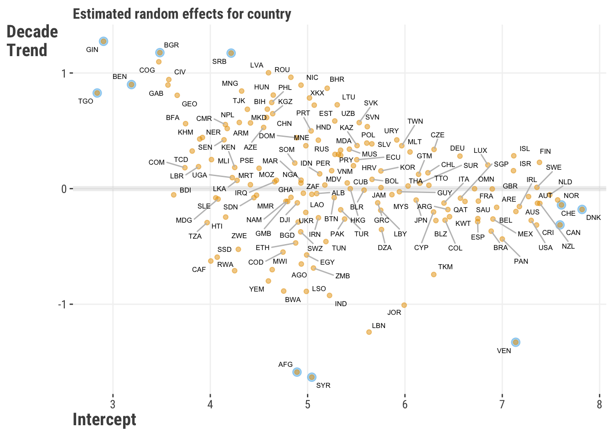
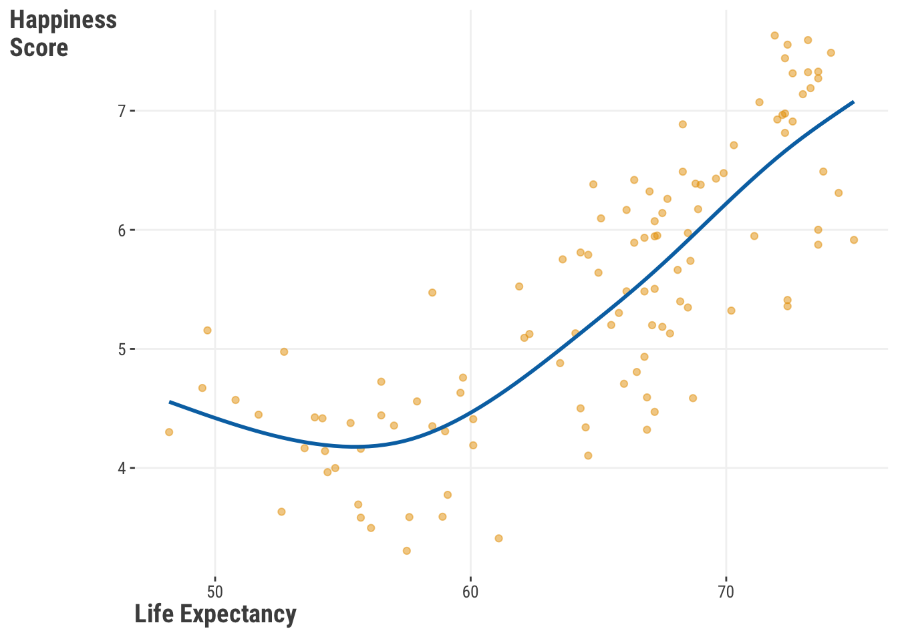
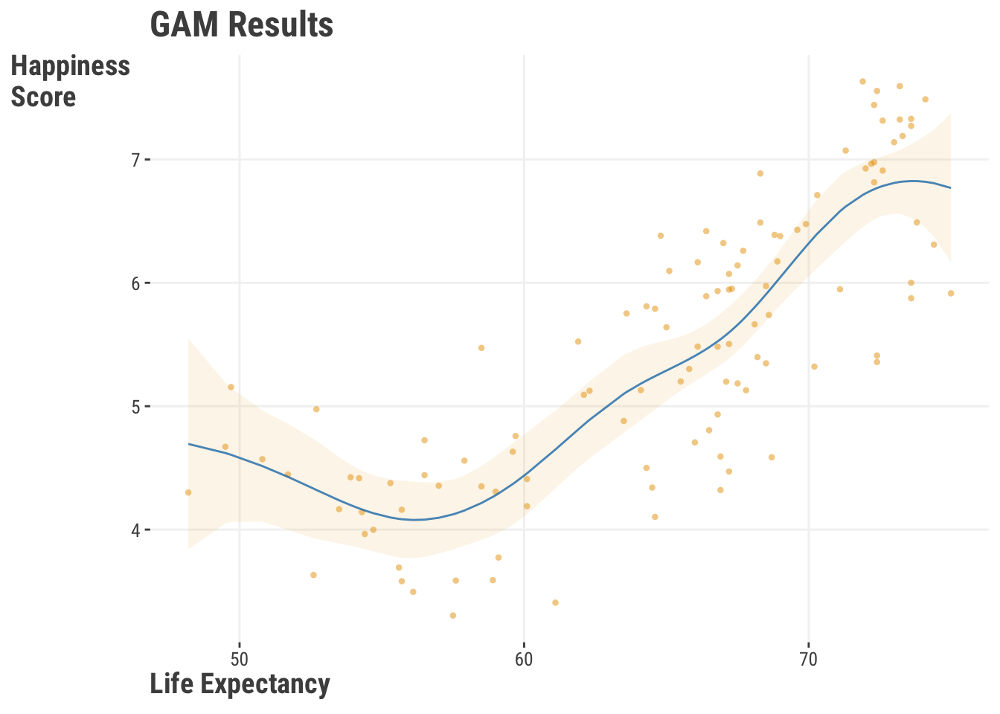
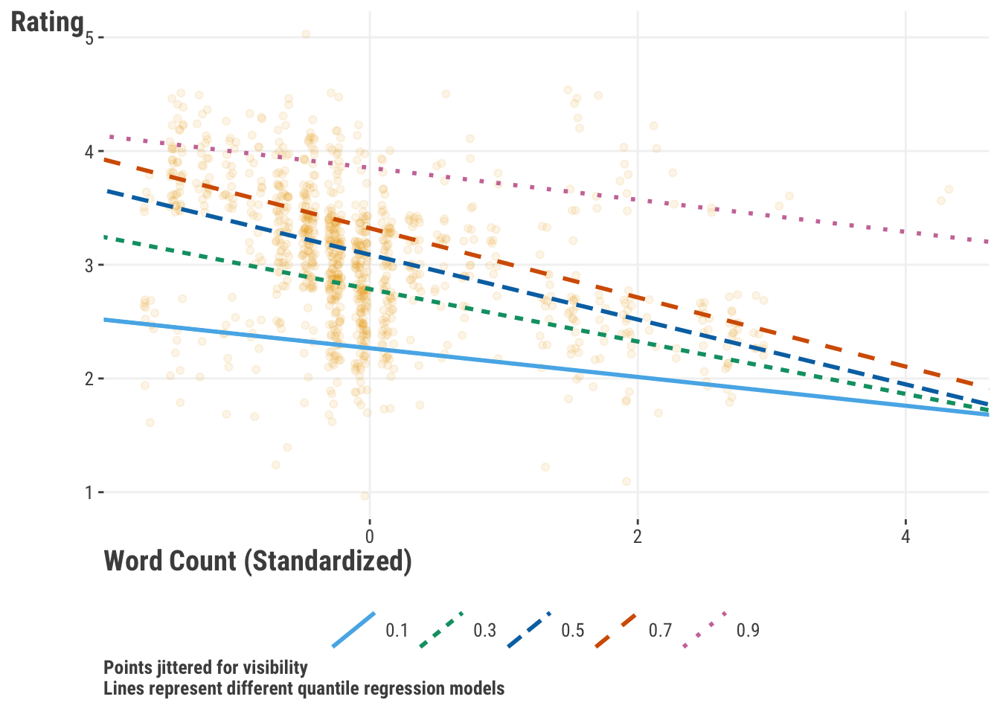

df_reviews = read_csv("data/movie_reviews.csv")
model_base = lm(rating ~ children_in_home + genre, data = df_reviews)
model_interaction = lm(rating ~ children_in_home * genre, data = df_reviews)
# summary(model_interaction)5 Extending the Linear Model
With just linear and generalized linear models, we have a very solid foundation for modeling, and we’ve seen how there is a notable amount we can do with a conceptually simple approach. We’ve also seen how we can extend the linear model to handle different types of target distributions to help us understand and make some inferences about the relationships between our features and target.
In this chapter, we’ll push our linear models even further with what are still common modeling tools, and useful approaches to have at your disposal. These particular methods are also good examples of how we can think about our data and approach in different ways, and can serve as a good starting point for even more techniques you may want to explore in the future. A thread that binds these techniques together is the ability to use a linear model to explore nonlinear relationships!
5.1 Key Ideas
- The linear and generalized linear models are great and powerful starting points for modeling, but there’s even more we can do!
- Linear models can be used to model nonlinear feature-target relationships
- Various techniques are available that allow us to model relationships that are not linear or monotonic, and can help us to better understand our data, even while still being linear models.
- While these seem like different approaches, we can still use our linear model concepts and approach at the core, take similar estimation steps, and even have similar, albeit more, interpretation.
5.1.1 Why this matters
The linear model is a great starting point for modeling. It is a simple approach that can be used to model a wide variety of relationships between features and targets, and it’s also a great way to get a feel for how to think about modeling. But linear and generalized models are just the starting point, and the models depicted here are very common extensions used in a variety of disciplines and industries. More generally, the following techniques allow for nonlinear relationships will still employing a linear model approach. This is a very powerful combination, and it’s good to be aware of these tools.
5.1.2 Good to know
While these models are extensions of the linear model, they are not necessarily more complex conceptually. However, like anything new, it can take a bit more effort to understand. You likely want to be fairly comfortable with standard linear models at least before you start to explore these extensions.
5.2 Interactions
Things can be quite complex in a typical model with multiple features, but just adding features may not be enough to capture the complexity of the relationships between features and target. Sometimes, we need to consider how features interact with each other to better understand how they correlate with the target. A common way to add complexity in linear models is through interactions. This is where we allow the effect of a feature to vary depending on the values of another feature, or even itself!
As a conceptual example, we might expect a movie’s rating is different for movies from different genres (much higher for kids movies, maybe lower for horror movies), or that genre and season work together in some way to affect rating (e.g. action movies get higher ratings in summer), or having kids in the home number might also interact with genre ratings. We might also consider that the length of a movie might plateau or even have a negative effect on rating after a certain point, i.e., it would have a curvilinear effect. All of these are types of interactions we can explore. Interactions allow us to incorporate nonlinear relationships into the model, and so greatly extend the linear model’s capabilities - we basically get to use a linear model in a nonlinear way!
With that in mind, let’s explore how we can add interactions to our models. Going with our first example, let’s see how having kids impacts the relationship between genre and rating. We’ll start with a standard linear model, and then add an interaction term. Using a formula approach makes it very straightforward to add an interaction term. We just need to add a : between the two features we want to interact, or a * to denote both main effects and the interaction.
import pandas as pd
import statsmodels.formula.api as smf
df_reviews = pd.read_csv("data/movie_reviews.csv")
model_base = smf.ols(
formula = 'rating ~ children_in_home + genre',
data = df_reviews
).fit()
model_interaction = smf.ols(
formula = 'rating ~ children_in_home * genre',
data = df_reviews
).fit()
model_interaction.summary()Here is a quick look at the model output for the interaction vs. no interaction interaction model. Starting with the base model, the coefficients look like what we’ve seen before, but we have several coefficients for genre. The reason is that genre is composed of several categories, and converted to a set of dummy variables (refer to Section 1.7.2 and Section 9.2.2). In the base model, the intercept tells us what the mean is for the reference group, in this case Action/Adventure, and the genre coefficients tell us the difference between the mean for that genre and the reference. For example, the mean rating for Action/Adventure is 2.76, and the difference between that genre rating for the drama genre is 0.55. Adding the two gives us the mean for drama movies 2.76 + 0.55 = 3.32. We also have the coefficient for the number of children in the home, and this does not vary by genre in the base model.
| feature | coef_base | coef_inter |
|---|---|---|
| (Intercept) | 2.764 | 2.764 |
| children_in_home | 0.142 | 0.142 |
| genreComedy | 0.635 | 0.637 |
| genreDrama | 0.554 | 0.535 |
| genreHorror | 0.129 | 0.194 |
| genreKids | −0.199 | −0.276 |
| genreOther | 0.029 | 0.084 |
| genreRomance | 0.227 | 0.298 |
| genreSci-Fi | −0.123 | −0.109 |
| children_in_home:genreComedy | −0.006 | |
| children_in_home:genreDrama | 0.053 | |
| children_in_home:genreHorror | −0.127 | |
| children_in_home:genreKids | 0.231 | |
| children_in_home:genreOther | −0.106 | |
| children_in_home:genreRomance | −0.124 | |
| children_in_home:genreSci-Fi | −0.029 |
But in our other model we have an interaction between two features: ‘children in the home’ and ‘genre’. So let’s start with the coefficient for children. It is 0.14, which means that for every additional child, the rating increases by that amount. But because of the interaction, we now interpret that as the effect of children when genre is the reference group Action/Adventure.
Now let’s look at the interaction effect for children and the kids genre. It is 0.23, which means that for the kids genre, the effect of having children in the home increases by that amount. So our actual effect for an additional child for the kids genre is 0.14 + 0.23 = 0.37 increase in the review rating. It is also correct to say that the difference in rating between the kids genre and the reference group Action/Adventure is 0.23, but, when with an increase in children , the difference in rating between the kids genre and Action/Adventure increases by 0.23. In other words, it is a difference in differences1.
When we talk about differences in coefficients across values of features, it can get a little bit hard to follow. In every case that you employ an interaction, you should look at the interaction visually for interpretation. Here is a plot of the predictions from the interaction model. We can see that the effect of children in the home is strongest for kids movies than for other genres, which makes a whole lot of sense! In other genres, the effect of having children seems to have little effect, and in others it still has a positive effect, but not as strong as for kids movies.

So we can see that interactions can allow a linear effect to vary depending on the values of another feature. But the real take home message from this is that the general effect is actually not just a straight line! The linear effect changes depending on the setting. Furthermore, the effect for children only applies when ‘genre’ is at its default group, or when other features are at their default or zero.
So, when we have interactions, we can’t talk about a feature’s effect without considering the other features. Some might see this as a downside, but it’s actually how most relationships between features and targets work. Interactions let us model these complex relationships, and they’re used a lot in real-world situations.
5.2.1 Average Effects
So what is the effect of children in the home? Or a particular genre, for that matter? We can’t really say, because the effect of one feature depends on the setting of the other feature. We can say what the effect of a feature is on average across the settings of the other features. This is called the average marginal effect2. We can compute this by averaging the effect of a feature across the values of the other features.
| term | estimate | std.error | statistic | p.value | conf.low | conf.high |
|---|---|---|---|---|---|---|
| children_in_home | 0.152 | 0.03 | 5.68 | 0.00 | 0.10 | 0.20 |
So-called marginal effects and related approaches such as SHAP values (see Section 2.3.5) attempt to boil down the effect of a feature to a single number, but this is difficult even in the simpler GLM settings, and downright misleading in more complex settings like our interaction model. Here we see the average coefficient for children in the home is 0.15, but we saw in Table 5.1 that this is slightly larger than what we would estimate in the non-interaction model, and we saw in Figure 5.1 it’s actually near zero (flat) for some genres. So what is the average effect really telling us? Consider a more serious case of drug effects across demographic groups, where the effect of the drug is much stronger for some groups than others. Would you want your doctor to prescribe you a drug based on the average effect across all groups or the specific group to which you belong?
When dealing with interactions in a model, it’s best to consider how a feature’s effect changes based on the values of other features it interacts with. Visualizing these effects can help us understand how the relationships change. It’s also helpful to consider what the predicted outcome is at important feature values, and how this changes with different feature values. This is the approach we’ve used with interactions, and it’s a good strategy overall.
5.2.2 ANOVA
A common method for summarizing categorical effects in linear models is through analysis of variance or ANOVA. ANOVA breaks down the variance in a target attributable to different features or their related effects such as interactions. It’s a bit beyond the scope here to get into all the details, but both base R and statsmodels have functions for this as demonstrated here.
anova(model_base)smf.stats.anova_lm(model_base)| feature | df | sum_sq | mean_sq | f | p |
|---|---|---|---|---|---|
| children_in_home | 1.00 | 6.45 | 6.45 | 21.25 | 0.00 |
| genre | 7.00 | 86.17 | 12.31 | 40.55 | 0.00 |
| children_in_home:genre | 7.00 | 3.75 | 0.54 | 1.76 | 0.09 |
| Residuals | 984.00 | 298.69 | 0.30 |
In this case, it doesn’t appear that the interaction effect is statistically significant if we use the typical .05 cut-off. We know the effect of children in the home is varies across genres, but this result suggests maybe it’s not as much as we might think. However, we also saw that the estimate for the children effect more than doubled for the kids genre, so maybe we don’t want to ignore it. That’s for you to decide.
The ANOVA approach can be generalized to provide a statistical test to compare models. For example, we can compare the base model to the interaction model to see if the interaction model is a better fit. However, it’s entirely consistent with just looking at the interaction result in the ANOVA for the interaction model, so doesn’t provide additional information, and the only models that can be compared this way must be nested, i.e., one model is a subset of the other.
It’s worth noting that ANOVA is often confused with being a model itself. When people use it this way, it is just a linear regression with only categorical features, something that is usually only seen within strict experimental designs that do not have interactions with continuous features. It’s pretty difficult to think of a linear regression setting where no continuous features would be of interest, but back when people were doing this stuff by hand, they just categorized everything to enable doing an ANOVA, which was tedious arithmetic but manageable. It’s a bit of a historical artifact, but might be useful for exploratory purposes. Other approaches are a little more general or not confined to nested models- ones that can be seen as subsets of another. An example is using AIC or the other methods employed in machine learning.
5.3 Mixed Models
5.3.1 Knowing Your Data
As much fun as modeling is, knowing your data is far more important. You can throw any model you want at your data, from simple to fancy, but you can count on disappointment if you don’t fundamentally know the structure that lies within your data. Let’s take a look at the following visualizations. In Figure 5.2, we see a positive relationship between the length of the movie and ratings.

We could probably just stop there, but given what we just saw, we might think to ourselves to be ignoring something substantial within our data: genre. We might want to ask a question, “Does this relationship work the same way across the different genres?”

A very quick examination of Figure 5.3 might suggest that the rating varies by genre, and that the relationship between length and rating varies significantly over the different genres. The group means in the right panel show variability across genre. In addition, on the left panel, some genres show a strong positive relationship, some show less of a positive relationship, a couple even show a negative relationship, and one even looks flat. We can also see that they would have different intercepts. This is a very important thing to know about your data! If we had just run a model with length as a feature and nothing else, we would have missed this important information.
Now consider something a bit more complicated. Here is a plot of the relationship between the length of a movie and the rating, but across release year. Again we might think there is notable variability in the effect across years. How can we account for this?

5.3.2 Overview of Mixed Models
What we’ve just seen might initially bring to mind an effect, and that’s the right way to think about it! A mixed model can be used to get at that type of relationship into our model, which we can think of as a group interaction, without much hassle and additional explainability. But it’s actually a quite flexible class that can also allow for more complicated but related types.
Before going too much further, the term mixed model is as vanilla as we can possibly make it, but you might have heard of different names such as hierarchical linear models, or multilevel models, or maybe mixed-effects models tossed around before. Maybe you’ve even been exposed to ideas like random effects or random slopes. These are in fact all instances of what we’re calling a mixed model.
What makes a model a mixed model? The mixed model is characterized by the idea that a model can have fixed effects and random effects. Fortunately, you’ve already encountered fixed effects – those are the features that we have been using in all of our models so far! We are assuming a single true parameter (coefficient/weight) for each of those features to estimate, and that parameter is fixed.
In mixed models, a random effect typically comes from a specific distribution, almost always a normal distribution, that unique variance in the outcome. This distribution of effects can be based on a grouping variable (such as genre), where we let those parameters, i.e. coefficients (or weights), vary across the groups, creating a distribution of values.
Let’s take our initial example with movie length and genre. Formally, we might specify something like this:
\[ \text{rating} = b_{\text{int[genre]}} + b_\text{length}*\text{length} \]
In this formula, we are saying that genre has its own unique effect for this model in the form of specific intercepts for each genre. This means that whenever an observation belongs to a specific genre, it will have an intercept that reflects that genre, and that means that two observations with the same length but from different genres would have different predictions.
We also posit that those come from a random distribution. We can specify that as:
\[b_{\text{int[genre]}} \sim \text{N}(b_\text{intercept}, \sigma_\text{int\_genre})\]
This means that the random intercepts will be normally distributed and the overall intercept is just the mean of those random intercepts, and with its own variance. It also means our model will have to estimate that variance along with our residual variance. Another very common depiction is:
\[\text{re}_{[\text{int\_genre}]} \sim \text{N}(0, \sigma_\text{int\_genre})\]
\[b_{\text{int[genre]}} = b_\text{intercept} +\text{re}_{[\text{int\_genre}]}\]
The same approach would apply with a random slope, where we would have a random slope for each group, and that random slope would be normally distributed with its own variance.
\[b_{\text{length[genre]}} \sim \text{N}(b_\text{length}, \sigma_\text{length\_genre})\]
A simple random intercept and slope is just the start. As an example, we can let the intercepts and slopes correlate, and we could have multiple grouping factors contribute, as well as allowing other features and even interactions themselves to vary by group! This is where mixed models can get quite complex, but the basic idea is still the same: we are allowing parameters to vary across groups, and we are estimating the variance of those parameters.
5.3.3 Using a Mixed Model
One of the key advantages of a mixed is that we can use it when the observations within a group are not independent. This is a very common situation in many fields, and it’s a good idea to consider this when you have grouped data. As an example we’ll use the happiness data for all available years, and we’ll consider the country as a grouping variable. In this case, observations within a country are likely to be more similar to each other than to observations from other countries. This is a classic example of when to use a mixed model. This is also a case where we wouldn’t just throw in country as a feature like any other factor since there 165 countries in the data.
In general, to use mixed models we have to specify a group effect for the model, but that’s the primary difference from our previous approaches used for linear or generalized linear models. For our example, we’ll look at a model with a random intercept of country, and one that adds a random slope of for the yearly trend per capita. This means that we are allowing the intercepts and slopes to vary across countries. Furthermore, by recoding year to start at zero, we’re allowing the starting point for country (the intercept) to vary across countries along with the yearly trend. For a larger effect, we also divide the yearly trend by 10, so the coefficient provides the change in happiness score per decade.
We’ll use the lme4 package in R which is the most widely used package for mixed models.
library(lme4)
df_happiness_all = read_csv("data/world_happiness_all_years.csv")
df_happiness_all = df_happiness_all |>
mutate(year_0 = (year - min(year))/10)
# random intercepts are specified by a 1
fit_ran_int = lmer(
happiness_score ~ year_0 + (1| country),
df_happiness_all
)
fit_ran_slope = lmer(
happiness_score ~ year_0 + (1 + year_0 | country),
df_happiness_all
)
summary(fit_ran_int)
summary(fit_ran_slope)As with our recommendation with GAMs later, R is the better tool for mixed models, as the functionality is overwhelmingly better there for modeling and post-processing. However, you can use statsmodels in Python to fit them as well3. But as an example, this doesn’t even converge with default settings even after scaling the data, so we had to switch the optimization method. These results correspond with the R results.
import statsmodels.api as sm
df_happiness_all = pd.read_csv("data/world_happiness_all_years.csv")
df_happiness_all = (
df_happiness_all
.assign(year_0 = lambda x: (x['year']- x['year'].min())/10)
)
fit_ran_int = sm.MixedLM.from_formula(
"happiness_score ~ year_0",
df_happiness_all,
re_formula='1',
groups=df_happiness_all["country"]
).fit()
fit_ran_slope = sm.MixedLM.from_formula(
"happiness_score ~ year_0",
df_happiness_all,
re_formula='1 + year_0',
groups=df_happiness_all["country"]
).fit()
fit_ran_int.summary()
fit_ran_slope.summary()Table 5.4 shows some typical output from a mixed model, focusing on the random slope model. The fixed effect part (Fixed) is your basic GLM result and interpreted the same way. Nothing new there, and we can see a slight positive decade trend in happiness, though maybe not a strong one. But the random effects (Random) are where the action is! We can see the standard deviation of the random effects, i.e., the intercepts and slopes. We can also see the residual (observation level) standard deviation, which is conceptually the same as what you saw with standard linear regression. We can also see the correlation between the random intercepts and random slopes. Depending on your tool, the default may be in terms of variances and covariances rather than standard deviations and correlations, but otherwise the same.
| Parameter | Coefficient | SE | CI | CI_low | CI_high | Group |
|---|---|---|---|---|---|---|
| Fixed | ||||||
| (Intercept) | 5.34 | 0.09 | 0.95 | 5.16 | 5.52 | |
| year_0 | 0.06 | 0.05 | 0.95 | -0.04 | 0.15 | |
| Random | ||||||
| SD (Intercept) | 1.14 | 0.95 | country | |||
| SD (year_0) | 0.57 | 0.95 | country | |||
| Cor (Intercept~year_0) | -0.38 | 0.95 | country | |||
| SD (Observations) | 0.34 | 0.95 | Residual | |||
In this case, we can see notable variability attributable to the random effects. How do we know? Well, if if our happiness score is on a roughly 1 - 8 scale, and we naturally have a standard deviation of 1.13 for it before accounting for anything else, we might surmise that having an effect of that size for just country (roughly 1.14) is a relatively notable amount. We can also see that the correlation between the random intercepts and random slopes is negative, which means that the groups with higher starting points have more negative slopes. Now let’s look at the estimates for the random effects for the model with both intercepts and slopes4.
ranef = ranef(fit_ran_slope)
# mixedup::extract_random_effects(fit_ran_slope) # prettier versionranef = pd.DataFrame(fit_ran_slope.random_effects).T
How do we interpret these deviations? For starters, they are deviations from the fixed effect for the intercept and year trend coefficient. So here that means anything negative is an intercept or slope below the corresponding fixed effect value, and anything positive is above that value. If we want the specific effect for a country, we just add the random effect value to the fixed effect value, and we can refer to those as random coefficients. So, for example, if we wanted to know the effects for the US, we would add its random effects to the fixed effect. This is exactly what we did in the previous section with the interaction model.
So let’s plot those random coefficients together to see how they relate to each other.

From this plot, we can sense why the estimated random effect correlation was negative. For individual country results, we can see that recently war-torn regions like Syria and Afghanistan have declined over time even while they started poorly as well. Some like Guinea and Togo started poorly but have improved remarkably over time. Many western countries started high and mostly stayed that way, though generally with a slight decline. Perhaps there’s only one direction to go when you’re already starting off well!
5.3.4 Mixed Model Summary
For a model with just one feature, we certainly had a lot to talk about! And this is just a glimpse of what mixed models have to offer, and the approach can be even richer than what we’ve just seen. But you might be asking- Why don’t I just put genre into the model like other categorical features? In the case of genre for movie reviews where there are few groups, that’s okay. But doing that with country or similar as in our model would typically result in estimation issues due to so many parameters. In general mixed models provide several advantages for the data scientist:
- Any coefficient can be allowed to vary by groups, including other random effects. It actually is just an interaction in the end as far as the linear predictor and conceptual model is concerned.
- The group-specific effects are penalized, which shrinks them toward the overall mean, and makes this a different approach from just adding a ‘mere interaction’. This helps avoid overfitting, and that penalty is related to the variance estimate of the random effect. In other words, you can think of it as running a penalized linear model where the penalty is applied to the group-specific effects (see @#sec-estim-penalty).
- Also unlike standard interaction approaches, we can estimate the covariance of the random effects, and specify different covariance structures for observations within groups.
- Because of the way they are estimated, mixed models can account for lack of independence of observations5, which is a common issue in many datasets. This is especially important when you have repeated measures, or when you have a hierarchical structure in your data, such as students within schools, or patients within hospitals.
- Standard modeling approaches can estimate these difficult models very efficiently, even with thousands of groups.
- The group effects are like a very simplified embedding (Section 9.2.2), where we have taken a categorical feature and turned it into a numeric one, like those shown in Figure 5.5. This may help you understand other embedding techniques that are used in other places like deep learning if you think of this as the simplest embedding approach.
- When you start to think about random effects and/or distributions for effects, you’re already thinking like a Bayesian (Section 3.11.2), who is always thinking about the distributions for various effects. Mixed models are the perfect segue from standard linear model estimation to Bayesian estimation, where everything is random.
- The random effect is akin to a latent variable of ‘unspecified group causes’. This is a very powerful idea that can be used in many different ways, but importantly, you might want to start thinking about how you can figure out what those ‘unspecified’ causes may be!
- Group effects will almost always improve your model’s performance relative to not having them, especially if you weren’t including those groups in your model because of how many groups there were.
In short, mixed models are a fun way to incorporate additional interpretive color to your model, while also getting several additional benefits to help you understand your data!
5.4 Generalized Additive Models
Wiggle, wiggle, wiggle, yeah! – LMFAO
5.4.1 When Straight Lines Aren’t Enough
Fitting a line through your data is always going to be the best approach. Not every relationship is linear and not every relationship is monotonic. Sometimes, you need to be able to model a relationship that has a fair amount of nonlinearity – they can appear as slight curves, waves, and any other type of wiggle that you can imagine.
In other words, we can go from the straight line here:

To the curve seen here:

That curved line in Figure 5.8 is called a spline. It is created by a feature and expanding it to multiple columns, each of which is a function of the original feature. We then a fit a model to that data as usual. Oddly enough, the result is that we can use a linear model to fit a curve through the data. While this might not give us the same tidy explanation that a typical line would offer, we will certainly get better prediction if it’s appropriate, and a better understanding of the reality and complexity of the true relationship. But often it’s useful for exploratory purposes, and visualization tools like ggplot, plotly6 and others make it easy.
x = rnorm(1000)
y = sin(x)
tibble(x, y) |>
ggplot(aes(x = x, y = y)) +
geom_smooth(method = 'gam', se = FALSE) import plotly.graph_objects as go
import numpy as np
x = np.random.normal(size = 1000)
y = np.sin(x)
fig = go.Figure()
fig.add_trace(
go.Scatter(
x = x,
y = y,
line_shape = 'spline'
)
)Models incorporating this type of effect belong to a broad group of generalized additive models (GAMs). When we explored interactions and mixed models, we explored how the feature-target relationship varies with another feature. There we focused on our feature and its relationship to the target at different values of other features. When we use a GAM, our initial focus is just on a specific feature and how its relationship with the target changes at different feature values. How are we going to do this, you might ask? Conceptually, we will have a model that looks like this:
\[ y = f(x) + \epsilon \]
This isn’t actually any different than what you’ve seen - it really isn’t! It’s just shorthand for the input \(x\) being fed into a function \(f()\) of some kind. The difference is that we are going to expand the feature \(x\) in some way, and so it will actually become multiple columns of input. Some approaches can be quite complex, tackling spatial, temporal, or other aspects of the data. But practically, it’s just extra columns in the model matrix that go into the model fitting function like any other feature. This helps us capture non-linear patterns in our data.
At this point, you might be asking yourself, “Why couldn’t I just use some type of polynomial regression or even a nonlinear regression?”. Of course you could, but both have limitations relative to a GAM. If you are familiar with polynomial regression, where we add columns that are squares, cubes, etc. of the original feature, you can think of GAMs as a more general approach, and very similar in spirit. But that polynomial approach assumes a specific form of nonlinearity, and has no regularization. This means that it tends to overfit the data you currently have, and you are forcing curves to fit through the data.
To use a nonlinear regression model, you need to know what the underlying nonlinear form is. Without taking extra steps, such models can also overfit. Furthermore, outside of well-known physical, chemical, or biological processes, it’s rarely clear what the underlying functional form should be. At the very least, we wouldn’t know a formula for life expectancy and happiness!
GAMs are better because they fit the data well without needing to know the underlying form. They also prevent overfitting in smaller data and/or more complex settings. We can use them for multiple features at once, and even include interactions between features. We also can use different types of splines to capture different types of nonlinearities. Here is another formal definition of a GAM that makes more clear we can deal with multiple features.
\[ \hat{y} = \sum \mathbf{X_j}\beta_j \]
In this case, each \(X_j\) is a matrix of the feature and its basis expansion, and the \(\beta_j\) are the coefficients for each of those basis expansion columns. But a specific X could also just be a single feature and it’s coefficient to model a linear relationship.
The nice thing is that you don’t have to worry about the details of the basis expansion - the package you choose will take care of that for you. You’ll have different options, and often the default is fine, but sometimes you’ll want to adjust the technique and how ‘wiggly’ you want the curve to be.
5.4.2 A Standard GAM
Now that you have some background, let’s give this a shot! In most respects, we can use the same sort of approach as we did with our other linear model examples. For our example here, we’ll use the model what was depicted in figure Figure 5.8, which looks at the relationship between the life expectancy and happiness score from the world happiness data (2018).
We’ll use the very powerful mgcv package in R. The s function will allow us to use a spline approach to capture the nonlinearity.
library(mgcv)
df_happiness = read_csv('data/world_happiness_2018.csv')
gam_model = gam(
happiness_score ~ s(healthy_life_expectancy_at_birth, bs = "bs"),
data = df_happiness
)
summary(gam_model)We can use the statsmodels package in Python to fit a GAM, or alternatively, pygam, and for consistency with previous models we’ll choose the former. Honestly though, you should use R’s mgcv, as these require notably more work without having even much of basic functionality. In addition, there is an ecosystem of R packages to further extend mgcv’s capabilities.
import statsmodels.api as sm
from statsmodels.gam.api import GLMGam, BSplines
import pandas as pd
df_happiness = pd.read_csv('data/world_happiness_2018.csv')
bs = BSplines(
df_happiness['healthy_life_expectancy_at_birth'],
df=9,
degree=3
)
gam_happiness = GLMGam.from_formula(
'happiness_score ~ healthy_life_expectancy_at_birth',
smoother = bs,
data = df_happiness
)
gam_happiness_result = gam_happiness.fit()
gam_happiness_result.summary()| Component | Term | Estimate | Std.Error | t.value | p.value |
|---|---|---|---|---|---|
| parametric coefficients | Intercept | 5.44 | 0.06 | 92.73 | 0 |
| EDF | REF.DF | F.VALUE | P.VALUE | ||
| smooth terms | s(Life Exp.) | 5.55 | 6.49 | 40.11 | 0 |
When you look at the model output, what you get will depend a lot on the tool you use, and the details are mostly beyond the scope we want to present here (check out this for more). But in general, the following information will be provided as part of the summary or as an attribute of the model object:
coefficients: The coefficients for each of the features in the model. For a GAM, these are the coefficients for the basis expansion columns, as well as standard linear feature effects.
global test of a feature: Some tools will provide a statistical test of the significance of the entire feature’s basis expansion, as opposed to just the individual coefficients. Above we have the intercept and the summarized smooth term.
edf/EDoF: Effective degrees of freedom. This is a measure of wiggle in the relationship between the feature and the target. The higher the value, the more wiggle you have. If you have a value close to 1, then you have a linear relationship. With our current result, we can be pretty confident that a nonlinear relationship gives a better idea about the relationship between a country’s life expectancy and happiness than a linear one.
R-squared: Adjusted/Pseudo \(R^2\) or deviance explained. This is a measure of how much of the variance in the target is explained by the model. The higher the value, the better the model. Deviance explained is an analog to the unadjusted \(R^2\) value for a Gaussian model that is used in the GLM setting. It’s fine as a general assessment of prediction-target correspondence, and in this case, we might be feeling pretty good about the model.
Far more important than any of these is the visual interpretation, and we can get plots from GAMs easily enough.
# not shown
plot(gam_model)# not shown
res_bs.plot_partial(0, cpr=True)Unfortunately the default package plots are not pretty, and sadly aren’t provided in the same way we’d expect for interpretation. But they’re fine for a quick look at your wiggly result. We provide a better looking one here7. The main interpretation is that there is not much relationship between healthy_life_expectancy_at_birth and happiness_score until you get to about 60 years of life expectancy, and then it increases at a faster rate. Various tools are available to easily plot the derivatives for more understanding.

To summarize, we can use a GAM to model nonlinear relationships with a linear model approach. We can use splines to capture those nonlinearities, and we can use a penalized approach to control the amount of wiggle in our model. What’s more, we can interact the wiggle with other categorical and numeric features to capture even more complexity in our data. This allows us to model spatial, temporal, and other types of data that have complex relationships.
GAMs are a very powerful modeling tool that take us a step toward more complex models, but without the need to go all the way to a neural network or similar. Plus they still provide standard statistical inference information. In short, they’re a great tool for modeling!
5.5 Quantile Regression
- Oh, you think the median is your ally. But you merely adopted the median. I was born in it, molded by it. I didn’t see the mean until I was already a data scientist, and by then it was nothing to me but misleading.
- Bane (probably)
People generally understand the concept of the arithmetic mean, or ‘average’. You see it some time during elementary school, it gets tossed around in daily language, and it is statistically important. After all, so many distributions depend on it! Why, though, do we feel so tied to it from a regression modeling perspective? Yes, it has handy features, but it can limit the relationships we can otherwise model effectively. Here we’ll show you what to do when the mean betrays you – and trust us, the mean will betray you at some point!
5.5.1 When The Mean Breaks Down
In a perfect data world, we like to assume the mean is equal to the middle observation of the data: the median. But that is only when things are symmetric though, and usually our data comes loaded with challenges. Skewness and even just a few extreme scores in your data may cause a rift between the median and the mean.
Let’s say we take the integers between 1 and 10, and find the mean.
\[\frac{1+2+3+4+5+6+7+8+9+10}{10} = 5.5\]
The middle value in that vector of numbers would also be 5.5.
What happens we replace the 1 with a more extreme value, like -10?
\[\frac{-10+2+3+4+5+6+7+8+9+10}{10} = 4.5\]
With just one dramatic change, our mean went down by a whole point. The median observation, though, is still 5.5. In short, the median is invariant to wild swings out in the tails of your numbers.
You might be saying to yourself, “Why should I care about this central tendency chicanery?” Let us tell you why you should care – the least squares approach to the standard linear model dictates that the regression line needs to be fit through the means of the variables. If you have extreme scores that influence the mean, then your regression line will also be influenced by those extreme scores.
Consider the following regression line:

Now, what would happen if we replaced a few of our observations with extreme scores?

With just a casual glance, it doesn’t look like our two regression lines are that different. They both look like they have a similar positive slope, so all should be good. To offer a bit more clarity, though, let’s put those lines in the same space:

With 1000 observations, we see that having just 10 relatively extreme scores is enough to change the regression line, even if just a little. But that little bit can mean a huge difference for predictions or just the conclusions we come to.
There are a few approaches we could take here, with common approaches being dropping those observations or Windsorizing them. Throwing away data because you don’t like the way it behaves is nearing on statistical abuse, and Windsorization is just replacing those extreme values with numbers that you like a little bit better. Let’s not do that!
A better answer to this challenge might be to try a median-based approach instead. This is where a model like quantile regression becomes handy. Formally, the objective function for the model can be expressed as:
\[ \text{Objective} = \Sigma \left((\tau - 1)\sum_{y_{i}<q}(y_{i}-q)+\tau\sum_{y_{i}\geq q}(y_{i}-q) \right) \tag{5.1}\]
With quantile regression, we are given an extra parameter for the model: \(\tau\) or tau. It’s a number between 0 and 1 representing the desired quantile (e.g., 0.5 for the median). The objective function also treats positive residuals differently than negative residuals. If the residual is positive, then we multiply it by the tau value. If the residual is negative, then we multiply it by -1 plus the tau value.
To demonstrate this type of model, let’s use our movie reviews data. Let’s say that we are curious about the relationship between the word_count variable and the rating variable to keep things simple. To make it even more straightforward, we will use the standardized (scaled) version of the variable. In our default approach, we will start with a median regression, in other words, a quantile of .5.
library(quantreg)
model_median = rq(
rating ~ word_count_sc,
tau = .5,
data = df_reviews
)
summary(model_median)import pandas as pd
import statsmodels.formula.api as smf
df_reviews = pd.read_csv("data/movie_reviews.csv")
model_median = smf.quantreg('rating ~ word_count_sc', data = df_reviews)
model_median = model_median.fit(q = .5)
model_median.summary() | feature | coef | conf.low | conf.high |
|---|---|---|---|
| (Intercept) | 3.09 | 3.05 | 3.26 |
| word_count_sc | −0.29 | −0.40 | −0.20 |
Fortunately, our interpretation of this result isn’t all that different from a standard linear model – the rating should decrease by -0.29 for every bump in standard deviation for number of words, which in this case is about 5 words. However, this is concerns the median rating, not the mean, as would be the case with standard linear regression.
Quantile regression is not a one-trick-pony though. Remember, it is called quantile regression – not median regression. Being able to compute a median regression is just the default. What we can do also is to model different quantiles of the same data. It gives us the ability to answer brand new questions – does the relationship between user age and their ratings change at different quantiles of rating? Very cool!
We can now examine the trends within 5 different quantiles of the data - .1, .3 .5, .7, and .9. We aren’t limited to just those quantiles though, and you can examine any of them that you might find interesting. Here is a plot of the results of these models.

To interpret our visualization, we could say that all of the quantiles show a negative relationship. The 10th and 90th quantiles seem weakest, while those in the middle show a notably stronger relationship. We can also see that that the 90th percentile model is better able to capture those values that would otherwise be deemed as outliers using other standard techniques. The following table shows the estimated coefficients for each of the quantiles.
| feature | coef | SE | CI_low | CI_high | quantile |
|---|---|---|---|---|---|
| (Intercept) | 2.27 | 0.03 | 2.21 | 2.33 | tau (0.1) |
| word_count_sc | −0.13 | 0.03 | −0.19 | −0.07 | tau (0.1) |
| (Intercept) | 2.79 | 0.03 | 2.73 | 2.84 | tau (0.3) |
| word_count_sc | −0.23 | 0.02 | −0.27 | −0.19 | tau (0.3) |
| (Intercept) | 3.09 | 0.02 | 3.06 | 3.12 | tau (0.5) |
| word_count_sc | −0.29 | 0.01 | −0.31 | −0.26 | tau (0.5) |
| (Intercept) | 3.32 | 0.02 | 3.28 | 3.36 | tau (0.7) |
| word_count_sc | −0.30 | 0.02 | −0.34 | −0.27 | tau (0.7) |
| (Intercept) | 3.85 | 0.05 | 3.76 | 3.95 | tau (0.9) |
| word_count_sc | −0.14 | 0.06 | −0.25 | −0.03 | tau (0.9) |
| 95% confidence intervals are shown. | |||||
5.5.2 Quantile Loss Function
Given how relatively simple the objective function is, let’s demystify this model further by creating our own quantile regression model. We’ll start by creating a loss function that we can use to fit our model.
quantile_loss = function(par, X, y, tau) {
linear_predictor = X %*% par
residual = y - linear_predictor
loss = ifelse(
residual < 0,
(tau-1)*residual,
tau*residual
)
sum(loss)
}def quantile_loss(par, X, y, tau):
linear_predictor = X.dot(par)
residual = y - linear_predictor
loss = np.where(
residual < 0,
(tau-1)*residual,
tau*residual
)
return sum(loss)This code is just the embodiment of Equation 5.1. Compared to some of our other approaches, we add an argument for tau, but otherwise proceed very similarly. We calculate the residuals, and then we calculate the loss based on the residuals.
5.5.3 Model Fitting
Now that we have our data and our loss function, we can fit the model almost exactly like our standard linear model. Again, note the difference here with our tau value, which we’ve set to .5 to represent the median.
X = cbind(1, df_reviews$word_count_sc)
y = df_reviews$rating
optim(
par = c(intercept = 0, word_count_sc = 0),
fn = quantile_loss,
X = X,
y = y,
tau = .5
)$par intercept word_count_sc
3.0886074 -0.2852232 from scipy.optimize import minimize
import numpy as np
X = pd.DataFrame(
{'intercept': 1,
'word_count_sc': df_reviews['word_count_sc']}
)
y = df_reviews['rating']
minimize(quantile_loss, x0 = np.array([0, 0]), args = (X, y, .5)).xarray([ 3.09011343, -0.28416408])Let’s compare this to our previous result, and the OLS results as well. As usual, our simple code does what we need it to do! We also see that the linear regression model would produce a relatively smaller coefficient.
| model | intercept | word_count_sc |
|---|---|---|
| OLS | 3.051 | −0.216 |
| Median | 3.089 | −0.285 |
| Ours | 3.089 | −0.285 |
5.6 Wrapping Up
The standard linear model is useful across many different data situations. It does, unfortunately, have some issues when data becomes a little bit more “real”. When you have extreme scores or relationships that a standard model might miss, you don’t need to abandon your linear model in favor of something more exotic. Instead, you might just need to think about how you are actually fitting the line through your data.
5.6.1 The Thread
The models discussed in this chapter are all linear models, but they add flexibility in how they model the relationship between the features and the target, and provide a non-linear aspect to the otherwise linear model. Furthermore, with tools like mixed models, GAMs, and quantile regression, we generalize our GLMs to handle even more complex data settings.
5.6.2 Choose Your Own Adventure
No matter how much we cover in this book, there is always more to learn. Hopefully you’ve got a good grip on linear models and related topics, so feel free to try out some machine learning in Chapter 6!
5.6.3 Additional Resources
There is no shortage of great references for mixed effects models. If you are looking for a great introduction to mixed models, we would recommend to start with yet another tutorial by one of your fearless authors! Michael Clark’s Mixed Models with R (2023) is a great introduction to mixed models and is freely available. For a more comprehensive treatment, you can’t go wrong with Gelman & Hill’s Data Analysis Using Regression and Multilevel/Hierarchical Models (2006), and their more recent efforts in Regression and Other Stories (2020), which will soon have an added component for mixed models - Advanced Regression and Multilevel Models (2024).
If you want to dive more into the GAM world, we would recommend that you start with the Moving Beyond Linearity chapter in An Introduction to Statistical Learning (James et al. 2021). Not only do they have versions for both R and Python, but both have been made available online. If you are wanting more after that, you can’t beat Simon Wood’s book, Generalized Additive Models: An Introduction with R (2017), or a more digestible covering of the same content by one of your own humble authors (Clark 2022).
For absolute depth on quantile regression, we will happily point you to the OG of quantile regression, Roger Koenker. His book, Quantile Regression (2005) is a must read for anyone wanting to dive deeper into quantile regression , or just play around with his R package quantreg. Galton, Edgeworth, Frisch, and Prospects for Quantile Regression in Econometrics is another of his.
5.7 Exercise
These models are so much fun, you should feel comfortable just swapping any feature(s) in and out of the models. For example, for the mixed model, try using gdp per capita or life expectancy instead of (just a) trend effect. For the GAM, try using several features with nonlinear effects and see what shakes out. For quantile regression, try a different feature like movie length with different quantiles.
Some models that employ an interaction that investigates categorical group differences like this actually call their model a difference-in-difference model.↩︎
These results are provided by the marginaleffects R package, which is great for this.↩︎
One of your authors worked for several years with the key developer of the mixed models functionality in statsmodels. As such, we can say there is zero doubt about the expertise going into its development, as there are few in the world with such knowledge. Even so, the functionality is not as mature or as expansive as what you get in R.↩︎
One of your authors provides a package for mixed models in R called mixedup. It provides a nice way to extract random effects and summarize such models (link).↩︎
Independence of observations is a key assumption in linear regression models, and when it’s violated, the standard errors of the coefficients are biased, which can lead to incorrect inferences. Rather than hacking a model (so-called ‘fixed effects’ models) or ‘correcting’ the standard error (e.g. with some ‘sandwich’ or estimator), mixed models can account for this lack of independence through the model itself.↩︎
Plotly is directly available in R and Python, and plotnine is the ggplot equivalent in Python.↩︎
We used the see in R for a quick plot. We also recommend its functionality via the gratia package to visualize the derivatives, which will show more of where the effect is changing most.↩︎